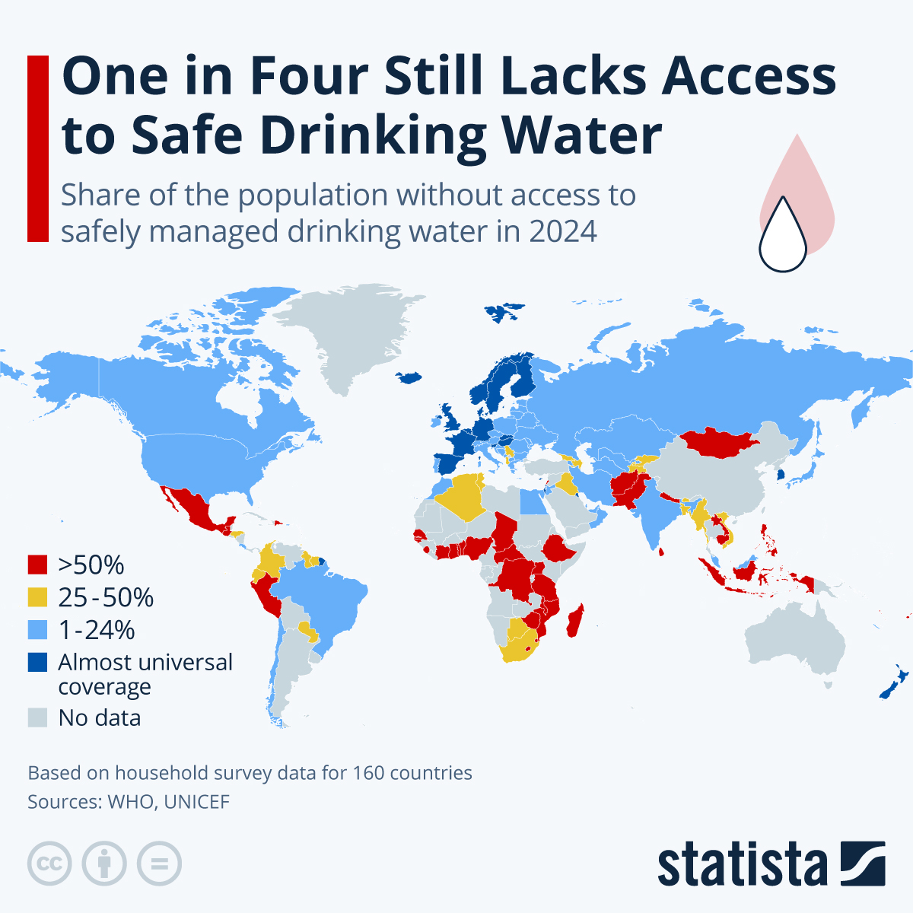

01
Water
Safe and reliable water is fundamental to health, nutrition, hygiene and everyday life.
What surrounds us can shape our health.
Water, sanitation, hygiene and the environment are deeply connected to human health. Explore how access, safety, infrastructure, inequality and environmental change shape health around the world.
The water we drink, the sanitation systems around us, the hygiene practices we can access and the environment in which we live all influence health.
Safe and reliable water is fundamental to health, nutrition, hygiene and everyday life.
Safe sanitation helps prevent exposure to human waste and protects people and communities.
Hand hygiene and other everyday practices can reduce exposure to infectious hazards.
Pollution, climate change, ecosystems and water resources can influence health across generations.
In 2024, about three quarters of the world's population used safely managed drinking-water services. That means approximately one in four people were still outside this highest service level.
Explore the map. Look for patterns. Which countries stand out? What questions does the map make you ask?

According to this map's classification, Mexico is among the countries where more than half of the population lacks safely managed drinking water.
What might help explain this situation?
Several Scandinavian countries appear in categories showing almost universal coverage of safely managed drinking water.
What factors might contribute to this level of coverage?
Do not stop at the map. Consider infrastructure, geography, income, governance, urbanization, climate, water resources, historical investment and inequality. Then ask which explanations require additional evidence.
Global monitoring distinguishes different levels of drinking-water service. Understanding these categories prevents us from treating very different situations as if they were the same.
Drinking water is from an improved source, available when needed and located on premises, with the required safety conditions.
An improved drinking-water source is accessible with a collection time of 30 minutes or less for a round trip.
An improved source is available, but collection takes more than 30 minutes for a round trip.
Drinking water comes from a source that does not meet the definition of an improved source.
Water is collected directly from rivers, lakes, ponds, streams, canals or irrigation channels.
Sanitation is not simply about having a toilet. Safe sanitation also involves preventing human waste from contaminating people, water, food and the wider environment.
In 2024, approximately 58% of the world's population used safely managed sanitation services.
Safe sanitation is therefore part of a broader public-health system.
Even when people understand good hygiene practices, they may not always have the water, soap or facilities needed to put those practices into action.
In 2024, approximately 80% of the global population had access to basic hygiene services.
That still left approximately 1.7 billion people without basic hygiene services.
Water, sanitation and hygiene are connected to infectious disease prevention, child health, nutrition, school participation and the resilience of health systems.
Unsafe water, sanitation and hygiene can increase exposure to pathogens and contribute to the spread of infectious diseases.
WASH conditions can influence children's exposure to infection and their broader health and development.
Repeated infections and unsafe environmental conditions can interact with nutrition and children's health.
Safe water, sanitation and hygiene can help create healthier learning environments.
Health-care facilities need reliable WASH services to provide safe and dignified care.
Access to safe water and sanitation is connected not only to health, but also to dignity, safety and participation in daily life.
A national average tells us something important—but it does not tell us whether everyone has the same experience.
Access to safely managed drinking water can differ substantially between rural and urban populations.
Household resources, infrastructure and public investment can influence access to services.
Conflict, displacement, disasters and weak infrastructure can disrupt essential services.
Water collection, sanitation and hygiene can have different consequences for women and girls.
A service may technically exist but still be inaccessible if facilities are not designed for different needs.
Historical and structural inequalities can shape access to essential environmental services.
Rivers, lakes, groundwater, wetlands and coastal ecosystems are part of interconnected systems. Pollution and unsustainable use can affect both ecosystems and human health.
Where does water come from? Where does wastewater go? What happens when rainfall changes? What happens when rivers or groundwater are polluted? How might climate change alter these systems?
Students can bring global health back to places they know: their school, community and local health system.
In 2023, approximately 447 million children lacked basic drinking-water services at school.
Approximately 427 million children lacked basic sanitation services at school.
Approximately 646 million children lacked basic hygiene services at school.
Where are drinking-water points? Are they accessible? Are sanitation facilities safe and usable? Is soap available? What could students learn from observing their own environment?
Good global-health investigators do not simply ask “What is the number?” They ask what the number means.
A country can have high national coverage while some communities remain underserved. A global average can improve while inequalities persist. Always ask: “Who is included in this number—and who might be hidden behind the average?”
SDG 6 aims to ensure availability and sustainable management of water and sanitation for all.
Universal and equitable access to safe and affordable drinking water.
Adequate sanitation and hygiene for all, with attention to vulnerable groups.
Improve water quality and reduce pollution and untreated wastewater.
Improve water-use efficiency and address water scarcity.
Strengthen integrated water-resource management.
Protect and restore water-related ecosystems.
These questions are not only about remembering facts. Use the map, the categories and the evidence to reason like a young global-health investigator.
Global health is about asking better questions, not simply knowing more facts.
Start with a map. Ask a question. Find evidence. Compare experiences. Listen to communities. Then think about what responsible action could look like.